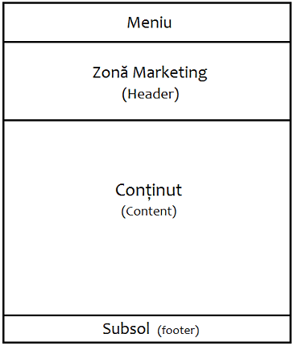
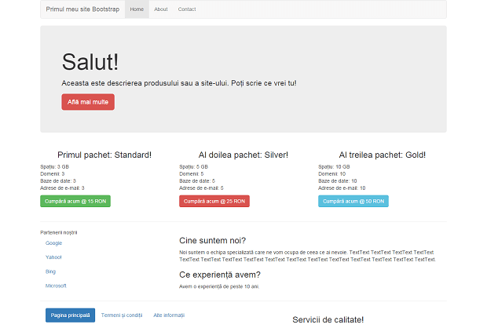

La realizarea unui site pe fundația Bootstrap, gradul de dificultate este mai mare decât pe platforma Wordpress deoarece la Bootstrap se lucrează doar cu liniile de cod.
-
Introducere Bootstrap
În multe cazuri dezvoltatorii web au tot conținutul și structura gata, dar nu pot trece mai departe din cauza absenței design-ului. Ei trebuie astfel să se bazeze pe designeri pentru a finaliza partea vizuală a proiectului lor. Acest proces consumă o grămadă de bani și este o pierdere serioasă de timp pentru un dezvoltator care are nevoie ca ideile lui să fie puse în aplicare cât mai repede posibil. În aceste cazuri, într-un mod super-eroic, salvatorul este Twitter Bootstrap!
Twitter Bootstrap este o fundație CSS care vă ajută la dezvoltarea aplicațiilor web responsiv. Acesta este unul dintre cele mai simple fundații CSS ale zilelor noastre din industria web. Este un proiect gratuit și 'Open Source', hostat pe GitHub, și original creat de (și pentru) rețeaua de socializare Twitter. Se presupune că nu ai cunoștințe de design și tot ce vrei să faci este scrii niște cod HTML. Pe scurt, Twitter Bootstrap are deja o foaie CSS pentru tine, jQuery inclus și are, de asemenea, unele instrumente populare JavaScript. Ai o grămadă de instrumente populare gata de utilizare. Tot ce trebuie sa faci este doar să plasezi codul HTML potrivit în locul potrivit.
Un site web responsiv înseamnă un site care se adaptează automat la mărimea ecranului și a rezoluției dispozitivului de pe care este accesat (laptop, tabletă, smartphone etc.).
In acest tutorial, îți explica cum poți începe să utilizezi Twitter Bootstrap prezentându-ți o pagină demo, și modul în care poți explora fundația și să o personalizezi după propriile preferințe. -
Noțiuni de bază
Pentru a începe să utilizezi Twiiter Bootstrap, trebuie să descarci arhiva cu fișierele bootstrap de pe pagina lor oficială getbootstrap.com. Aceasta este valabilă în două forme: versiunea precompilată și versiunea cod sursă.
Versiunea 'Cod Sursă' vine scrisă în Less (sau Sass). toate JavaScript-urile și documentațiile necesare. Less și Sass două sunt pre-procesoare CSS, adică un fel de extensii care fac codul CSS mult mai dinamic, organizat și productiv. Astfel, designerii și dezvoltatorii ambițioși pot personaliza și construi propria lor versiune de Bootstrap. Dar dacă nu ești familiar cu Less (sau Sass) ori nu ești interesant în editarea codului sursă, poți pur și simplu să folosești versiunea precompilată vanilla CSS. Toate stilurile pot fi personalizate cu propriile coduri CSS.
Noi ne vom concentra pe versiunea precompilată, care odată dezarhivată, arată cam așa:
bootstrap/
├── css/
│ ├── bootstrap.css
│ ├── bootstrap.css.map
│ ├── bootstrap.min.css
│ ├── bootstrap-theme.css
│ ├── bootstrap-theme.css.map
│ └── bootstrap-theme.min.css
├── js/
│ ├── bootstrap.js
│ └── bootstrap.min.js
└── fonts/
├── glyphicons-halflings-regular.eot
├── glyphicons-halflings-regular.svg
├── glyphicons-halflings-regular.ttf
├── glyphicons-halflings-regular.woff
└── glyphicons-halflings-regular.woff2
Structura Bootstrap este destul de simplă și auto-explicativă. Aceasta include fișiere precompilate care pot fi utilizate rapid în orice proiect web. În afară de CSS compilat și minified (micșorat) și fișierele JavaScript, include, de asemenea, fonturi de la Glyphicons, și tema opțională de început Bootstrap.
Această structură poate fi încorporată foarte ușor în structura de fișiere a proiectului tău doar adăugând fișierele Bootstrap exact cum sunt în arhiva originală, sau dacă nu se potrivesc bine cu proiectul tău, poți re-aranja fișierele și să le pui oriunde vrei. Doar asigură-te că folderul 'fonts' este în același director cu folderul css.
Hai să ne murdărim puțin mâinile! Deschide-ti editorul de text (eu personal prefer și recomand Notepad++) și crează primul fișier numit "index.html" în folderul principal al proiectului.

Structura HTML de bază:
<!DOCTYPE html>
<html lang="en">
<head>
<meta charset="utf-8">
<meta http-equiv="X-UA-Compatible" content="IE=edge">
<meta name="viewport" content="width=device-width, initial-scale=1">
<title>Bootstrap Website </title>
<link href="css/bootstrap.min.css" rel="stylesheet">
</head>
<body>
<h1>Hello, world! </h1>
<script src="https://ajax.googleapis.com/ajax/libs/jquery/1.11.2/jquery.min.js"></script>
<script src="js/bootstrap.min.js"></script>
</body>
</html>
Este important să începem orice pagină HTML cu declarând tipul documentului:<!DOCTYPE html>, astfel browserul înțelege ce fel de document va deschide. Secțiunea HEAD conține trei tag-uri<meta>importante care trebuie declarate înainte, iar orice alte tag-uri trebuie adăugate după acestea. Fișierele JavaScript adăugate la sfârșitul paginii îi vor permite acesteia să se încarce vizibil înainte ca vreun JavaScript să fie executat. jQuery este necesar pentru extensiile Bootstrap, și trebuie încărcat înainte debootstrap.js. Dacă nu vrei să folosești nici una din facilitățile interactive Bootstrap, atunci poți omite aceste fișiere din sursă.
Până aici, fișierul tău index.html ar trebui să arate cam așa:

Acesta este minimul necesar pentru a construi un site pe fundația Bootstrap. Probabil vrei să arunci un ochi la exemplele mai avansate de pe pagina Bootstrap's examples. De asemenea, poți găsi teme complete și gratuite pe diferite website-uri precum https://bootswatch.com/ (poți găsi mai multe la pagina Sugestii/Recomandări).
-
Mod de construcție
Site-urile construite pe Bootstrap au un design responsiv, adică același cod sursă va adapta automat design-ul pentru mărimea ecranului de pe care este accesat site-ul (tablete, telefoane etc). Design-ul se realizează cu ajutorul unui sistem de coloane, fiind posibilă afișarea a maxim 12 coloane egale (grids) în funcție de mărimea dispozitivului. Aceste coloanele constituie structura principală a aspectului, care definește orientările orizontale și verticale pentru aranjarea conținutului și aplicarea marginilor.
Coloanele sunt poziționate în interiorul unor rânduri -> div-uri cu clasarow, care crează grupuri orizontale de coloane. Poți folosi câte astfel de rânduri vrei, dar coloanele trebuie să fie neapărat incluse în aceste rânduri. Pe un rând, lățimea fiecărei coloană poate fi modificată în funcție de cele 12 coloane, dar nu e obligatoriu să folosești toate cele 12 coloane.
Sistemul Bootstrap are 4 niveluri de clasexspentru telefoane (<768px),smpentru tablete (≥768px),mdpentru desktop-uri (≥992px), șilgpentru desktop-uri mai mari (≥1200px). Acestea definesc practic dimensiunile la care coloanele se vor poziționa orizontal. Clasele pot fi folosite în orice combinație pentru a obține structuri flexibile.
De exemplu ca să adăugăm 2 rânduri, primul cu două coloane, iar al doilea rând cu 4 coloane, scriem așa:
<div class="row">
<div class="col-md-6">First column</div>
<div class="col-md-6">Second column</div>
</div>
<div class="row">
<div class="col-md-3">First column</div>
<div class="col-md-3">Second column</div>
<div class="col-md-3">Third column</div>
<div class="col-md-3">Fourth column</div>
</div>
Putem folosi lățimi mixte ale coloanelor:
<div class="row">
<div class="col-md-9">Wider column</div>
<div class="col-md-3">Smaller column</div>
</div>
Putem schimba aspectul compensând cu niște coloane goale utilizând clasaoffset, de exemplu pentru a crea un conținut mai îngust și centrat:
<div class="row">
<div class="col-md-6 col-md-offset-3">Centered column<
/div> </div>
Putem seta coloanele cu lățime fixă sau full (pe tot ecranul) utilizând clasa.containerrespectiv.container-fluid:
<div class="container">
<div class="row">
<div class="col-md-8">
Parent fixed-width column
<div class="row">
<div class="col-md-6">Nested column</div>
<div class="col-md-6">Nested column</div>
</div>
</div>
</div>
</div>
<div class="container-fluid">
<div class="row">
<div class="col-md-4">Fluid ..</div>
<div class="col-md-4">.. and full-width ..</div>
<div class="col-md-4">.. example</div>
</div>
</div>
Dacă combinăm niveluri de clase diferite, obținem un design diferit pe mobil și desktop. În exemplul de mai jos, pe desktop vor fi 4 coloane pe o linie, dar pe mobil ele vor avea lățime full (pe tot ecranul) și vor fi poziționate una peste cealaltă:
<div class="row">
<div class="col-xs-12 col-md-3">.col-xs-12 .col-md-3</div>
<div class="col-xs-12 col-md-3">.col-xs-12 .col-md-3</div>
<div class="col-xs-12 col-md-3">.col-xs-12 .col-md-3</div>
<div class="col-xs-12 col-md-3">.col-xs-12 .col-md-3</div>
</div> -
Înainte de a construi un website este mai bine să realizăm o schiță simplă a acestuia (pe hârtie sau chiar în paint):
- 1. Meniu (Menu)
- 2. Zonă de Marketing (Header)
- 3. Conținut (Content)
- 4. Subsol (Footer)

Acum, trebuie să reții că pentru orice componentă care vrei să o adaugi pe pagină, îi vei găsi instrucțiunile în documentația oficială Bootstrap. Înainte de a crea aceste secțiuni pe pagină, vom adăuga clasa container care va va centra conținutul pe mijlocul ecranului, div-ul container îl vom închide doar la sfârșitul paginii. Acest div reprezintă structura principală a paginii. Acum du-te si scrie următorul div chiar sub<body>și închide-l cu</div>înainte de script-urile JavaScript de la sfârșitul paginii:
<div class="container">
1. Zona Meniului
E timpul să adăugăm titlul site-ului (ca un fel de logo) și meniul, luat din documentația Bootstrap care te ajută foarte mult până când o să reții clasele componentelor.
<nav class="navbar navbar-inverse navbar-fixed-top">
<div class="navbar-header">
<button type="button" class="navbar-toggle collapsed" data-toggle="collapse" data-target="#navbar" aria-expanded="false" aria-controls="navbar">
<span class="sr-only">Toggle navigation</span>
<span class="icon-bar"></span>
<span class="icon-bar"></span>
<span class="icon-bar"></span>
</button>
<a class="navbar-brand" href="#">Primul meu site Bootstrap</a>
</div>
<div id="navbar" class="collapse navbar-collapse">
<ul class="nav navbar-nav">
<li class="active"><a href="#">Home</a></li>
<li><a href="#about">About</a></li>
<li><a href="#contact">Contact</a></li>
</ul>
</div>
</div>
</nav>
Vom folosi tag-ul<nav>pentru zona meniulului. Clasanavbar-inversereprezintă învelișul meniului (background-ul negru), pentru background gri poți folosi clasanavbar-default, clasanavbar-fixed-topface ca bara meniului să rămână fixă și vizibilă în partea de sus chiar dacă derulăm pagina mai jos, dacă nu vrei ca meniul să fie mereu vizibil atunci poți elimina această clasă. Clasanavbar-headere folosită pentru prezentarea brandului (printr-un logo sau text). Butoanele cu claselenavbar-toggle collapsedreprezintă meniul pe o rezoluție mai mică, ca de smartphone, și îl face compatibil cu touchscreen-ul acestuia. Clasanavbar-brandafișează numele site-ului. Pentru listarea meniului am folosit elementele HTML standard pe care probabil le știi deja:ulșili.
2. Zona de Marketing
Există o frumoasă clasă predefinită foarte ușor de utilizat inclusă în Bootstrap pentru zona de marketing care poate fi folosită pentru a afișa banere și anumite descrieri:jumbotron. Acest lucru este folosit mai ales pe site-uri web care vând anumite produse.
<div class="jumbotron">
<h1>Salut!</h1>
<p>Aceasta este descrierea produsului sau a site-ului. Poți scrie ce vrei tu!</p>
<p>
<a class="btn btn-lg btn-primary btn-danger" href="#" role="button">Află mai multe</a>
</p>
</div>
Poți face orice legătură să arate ca un buton prin adăugarea claseibtnși apoi modifici dimensiunea prin adăugarea unor clase suplimentare pe care le găsești în documentația Bootstrap. Pentru a schimba culorile butoanelor, se adaugă clase precum btn-success (verde), btn-info (albastru deschis), btn-warning (portocaliu) and btn-danger (roșu). Verifică-ți pagina în browser, până aici ar trebui să arate ca și cea de mai jos:

Este uimitor că până aici, fară să scriem o linie de CSS am reușit să facem o frumoasă "Zona de Marketing".
3. Conținutul
După cum am scris secțiunea "Mod de construcție", Design-ul Bootstrap este construit pe 12 coloane egale. Orice element de pe pagină ocupă cel puțin o coloană. Lățimea acestuia este constuită în funcție de câte coloane ocupă. Eu am să adaug un rând cu 3 coloane egale:
<div class="row">
<div class="col-md-4">
<h3 class="text-center">Primul pachet: Standard!</h3>
<p<
Spațiu: 3 GB<br>
Domenii: 3<br>
Baze de date: 3<br>
Adrese de e-mail: 3<br>
</p>
<a href="#" class="btn btn-success">Cumpără acum @ 15 RON</a>
</div>
<div class="col-md-4">
<h3 class="text-center">Al doilea pachet: Silver!</h3>
<p>
Spațiu: 5 GB<br>
Domenii: 5<br>
Baze de date: 5<br>
Adrese de e-mail: 5<br>
</p>
<a href="#" class="btn btn-danger">Cumpără acum @ 25 RON</a>
</div>
<div class="col-md-4">
<h3 class="text-center">Al treilea pachet: Gold!</h3>
<p>
Spațiu: 10 GB<br>
Domenii: 10<br>
Baze de date: 10<br>
Adrese de e-mail: 10<br>
</p>
<a href="#" class="btn btn-info">Cumpără acum @ 50 RON</a>
</div>
</div>
Clasarowcrează un rând nou, iar clasacol-md-4folosită de 3 ori, crează 3 părți egale de câte 4 coloane (12/4=3). În continuare putem adăuga câte rânduri vrem, care pot avea câte coloane vrem. Hai să mai adăugăm încă un rând cu 2 coloane inegale:
<br><hr>
<div class="row">
<div class="col-md-4">
...Partea stânga...
</div>
<div class="col-md-8">
...Partea dreaptă...
</div>
</div> <hr>
Tag-ulbrreprezintă un rând liber pentru a avea mai mult spațiu între cele 2 rânduri, iar tag-ulhrafișează o bara orizontală pentru a delimita mai bine cele două rânduri. Acum în locul textului "...Partea stângă..." vom adăuga următorul cod, pentru a crea un alt meniu secundar:
<ul class="nav nav-list">
<li class="nav-header">Partenerii noștrii</li>
<li><a href="#">Google</a></li>
<li><a href="#">Yahoo!</a></li>
<li><a href="#">Bing</a></li>
<li><a href="#">Microsoft</a></li>
</ul>
Trebuie să adaugi clasa 'nav-list' în plus față de clasa 'nav', care va face meniul sa arate ca o listă. Acum să trecem la partea din dreapta, înlocuiește textul "...Partea dreaptă..." cu următorul cod:
<h3>Cine suntem noi?</h3>
<p>Noi suntem o echipa specializată care ne vom ocupa de ceea ce ai nevoie. TextText TextText TextText TextText TextText TextText TextText TextText TextText TextText TextText TextText TextText TextText TextText TextText.060;/p>
<h3>Ce experiență avem?</h3>
<p>Avem o experiență de peste 10 ani.</p>
Verifică-ți pagina în browser, ar trebui să arate mult mai "vie" acum. După cum poți vedea, suntem foarte aproape de a termina design-ul final. Mai avem doar puțin cu ultima porțiune din site, și anume subsolul. În acest moment pagina ar trebui să arate cam așa:

4. Subsol (Footer)
Pentru porțiunea FOOTER, vom împărți din nou un rând în 2 părți și vom adăuga din nou un meniu mic:
<footer class="footer"> <div class="col-md-5">
<ul class="nav nav-pills">
<li class="active"><a href="#">Pagina principală</a></li>
<li><a href="#">Termeni și condiții</a></li>
<li><a href="#">Alte informații</a></li>
</ul>
</div>
<div class="col-md-7">
<h3 class="muted text-center"> Servicii de calitate!</h3>
</div>
</footer>
Destul de simplu! Am împărțit folosit tag-ul htmlfooterca un rând și l-am împărțit în 2 coloane inegale. Pe coloana din stânga am adăugat un mic meniu de navigare, iar clasanav-pillsreprezintă aspectul și poziționarea în linie a acestuia, iar în dreapta am adăugat un mic text.
Așadar, am construit o pagină responsiv simplă dar decentă conform ultimelor standarde web, folosind fundația Twitter Bootstrap. Nu a durat foarte mult timp, gândește-te ce ai putea face adăugându-ți propriile stiluri CSS și alocând mai mult timp proiectelor.
Pagina noastră poate fi accesată la urmățorul link: www.cumsafaciunsiteweb.com/demo-bootstrap/index.html și te poate ajuta în cazul în care ai anumite probleme și dorești să vezi codul sursă al acesteia (pentru a accesa codul sursă fă click dreapta într-un spațiu liber pe pagină și apasă pe "View Page Source" sau "Afișează Sursa Paginii"). Aici avem și o imagine cu pagina terminată:

-
5. Adăugarea stilurilor CSS Personalizate
Dacă ai niște cunoștințe de CSS și dorești să personalizezi stilurile implicite Bootstrap, atunci cea mai bună cale este să-ți construiești propria foaie de stil CSS personalizat, incluzi stilul Bootstrap la început și apoi înlocuiești stilurile în propria ta foaie CSS. Asigură-te să adaugi foaia ta CSS în fișierul HTML și nu foaia Bootstrap.css. Dacă ești mulțumit de stilul implicit Bootstrap atunci, evident, nu ai de ce să creezi o foaie personalizată.
Totuși, pe cât de multe site-uri vor folosi această fundație, stilul CSS va deveni comun și poate fi văzut pe toate celelalte site-uri construite cu Bootstrap (dacă nici acolo nu s-au adăugat deloc stiluri CSS personalizate). Deci, este mai bine dacă măcar puțin îți adaugi propria "aromă" de CSS, ca să-i oferi site-ului un aer de originalitate.
Ca să incluzi stilul Bootstrap în propria ta foaie CSS, după cum am spus mai sus, adaugi următorul cod la începutul foii tale CSS:
@import url("bootstrap.min.css"); -
6. Alte componente Bootstrap importante
Centrare paragraf
Pentru a face un paragraf să stea în mijlocul unui document lung, poți adăuga clasaLEAD. De asemenea, va face fonturile paragrafului alineat special un pic mai mari decât restul fonturilor din document.
Tag-uri scriere
De asemenea, poți utiliza tag-urile de scriere precum<small>,<strong>și<em>în interiorul paginii HTML. Și tag-urile precum<b>și<i>sunt valide.
Alinierea textului
Alinierea textului în interiorul oricărui paragraf sau div poate fi făcută folosind clasele:text-left,text-centerșitext-right.
Culori texte
Poți seta culorile standard pentru paragrafe folosind diverse clase precummuted(gri),text-warning(roșu),text-error(maro profund),text-info(albastru deschis) șitext-success(verde).
Stil tabele
Twitter Bootstrap are inclus design-ul pentru tabele. Folosește codurile de mai jos:
<table class="table">
<tr>
<td>...</td>
<td>...</td>
</tr>
......
</table>
Imaginile
Poți adăuga imagini folosind codul html normal:<img src="imagine.jpg" />. Pentru a îți face design-ul puțin mai interesant, adaugă clase precumimg-roundedpentru colțuri rotunde,img-circlepentru a afișa imaginea rotundă șiimg-polaroidpentru a aduce umbre și rotunjiri colțurilor imaginii.
Meniuri 'Drop Down'
Pentru a adăuga un meniu 'drop down' (adică mai multe opțiuni la un element din meniu) la bara de navigare, folosește-te de următorul model:
<li class="dropdown">
<a href="#" class="dropdown-toggle" data-toggle="dropdown">
<i class="icon-th-large"></i> Drop Down
<b class="caret"></b>
</a>
<ul class="dropdown-menu">
<li><a href="#">Item1</a></li>
<li><a href="#">Item2</a></li>
<li><a href="#">Item3</a></li>
</ul>
</li>
Așadar, în acest tutorial ți-am arătat elementele de bază pentru a utiliza fundația Bootstrap și cum poți începe cu aceasta. Acum că, ai înțeles cum funcționează, ar trebui să îți fie mult mai ușor să înțelegi documentațiile originale Bootstrap. Le poți găsi http://getbootstrap.com/components/ - cu siguranță vei găsi o mulțime de caracteristici noi pentru realizarea unui website profesional.
Surse cu anumite informații explicative despre Bootstrap: https://www.sitepoint.com, http://www.w3schools.com.